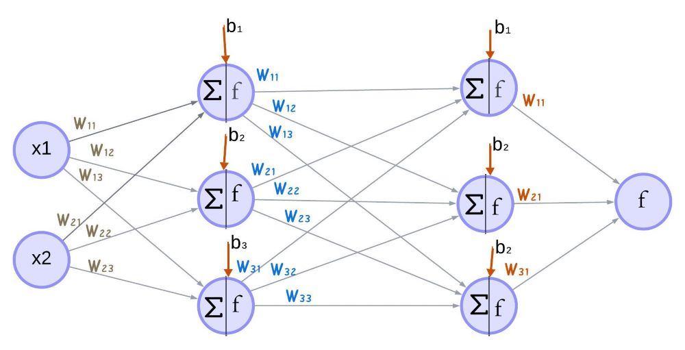
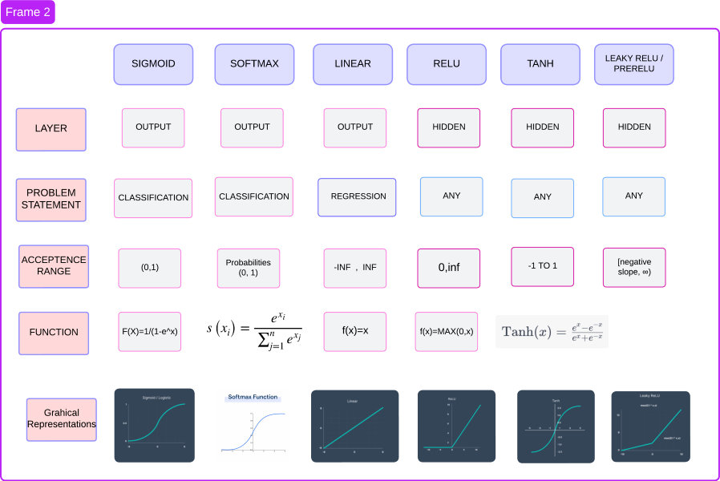

Neural Network
Although a neural network is a black box which is very hard to decode what kind of patterns it is making to produce the high accuracy outputs. a neural network actually been inspired by the biological neural networks. where the flow of information is so complex to understand and explain. the accuracy of a neural network depends on the dimensions. more the dimensions more will be the accuracy. the dimensions are nothing but the number of hidden layers and number of nodes in each hidden layer. more the hidden layers better the system classifies the output. the lays in between the input and output layers are called hidden layers.
So a neural network is basically the connections of nodes. where this nodes are grouped as layers. this layers are classified as input layers, hidden layers and output layers. the nodes in a input layer represents input features and the nodes in output layer represent the predicted output. But the nodes in the hidden layers has some suppurate functionality where it is responsible for the mathematical operations such as Matrix multiplication and activation functions. Each node in the hidden layer is capable of generating outputs by this operations. the nodes in one layer are connected to the nodes in the other layer. this connections are assigned with certain values this are known as the weights. this weights involve in the Matrix multiplication. Each node is assigned with a bias value. Bias is added to the Matrix multiplication to get the output. this output is then passed through the activation function to produce the final output of that particular node. so output of previous layer acts as the input to the next layer. The output of the last layer is the final output.

fig 1 : Artificial Neural Network
Understanding higher dimensions of Neural Networks is very difficult. let us consider 4 layers. one Input , 2 Hidden and 1 output. Input with two features(nodes) and output with one feature(nodes). lets consider this as the base NN for further analysis.
$$Z=f (WX+b)$$
$$X=(X1,X2)$$
$$W1=\begin{pmatrix}
w_{11} & w_{12} & w_{13} \\
w_{21} & w_{22} & w_{23}
\end{pmatrix}$$
$$W2=\begin{pmatrix}
w_{11} & w_{12} & w_{13} \\
w_{21} & w_{22} & w_{23}\\
w_{31} & w_{32} & w_{33}
\end{pmatrix}$$
$$W3=\begin{pmatrix}
w_{11} \\
w_{21}\\
w_{31}
\end{pmatrix}$$
X1 , X2 are the input features (x).
W are the weights.
b are the biases.
f represents the activation function.
∑ is mathematical operations
So we came across alot of thers like Activation function, Weights, Biases These are some of the important concepts to understand in forward propagation
Why we use weights? Weights are something that can be interrupted to get our desired output. you can also consider it as the set of values that can be multiplied to the input such that we can get our output. so we always try to change the weights until we get the perfect output. the final weights are used as the multiplicand to the new input to get the prediction result. As you can see in the frame one each node output can be calculated by multiplying that outputs to the weights. The weights are used so that the model can learn the correlation between the inputs and outputs.
Why are Bias? as wights, Bias in some value that is added to the weighted matrix to shift the output left or right. the bias is also updated every time to get the desired output.
Activation Function
Why use Activation Function? The outputs, calculated using weights and biases, are passed through an activation function to introduce non-linearity. An activation function determines which data should proceed forward, enhancing output efficiency by limiting unnecessary data flow through nodes. It is a mathematical operation applied to node outputs that leads to effective learning. For better understanding, consider a classification problem where the node output is a numerical value. Activation functions help convert these numerical outputs into class labels. Functions like sigmoid or tanh adjust the output to determine if it should be activated or remain unchanged.
Without an activation function, the model behaves like a linear regression model, producing only numerical outputs. This limitation makes it challenging to perform classification tasks and when dealing with datasets containing only positive values. By applying the ReLU activation function, we can effectively restrict negative values, ensuring more accurate and meaningful predictions.
We apply an activation function at each node to ensure that outputs are activated, which enhances the model's ability to solve complex problems and capture non-linear relationships. Linear functions allow all data to pass through and are typically used in regression tasks. In contrast, non-linear functions introduce non-linearity, transforming outputs before they proceed. Examples include Softmax, Sigmoid, and ReLU.
Activation functions are classified based on whether it is applied on output or hidden layers and whether the problem statement is classification or regression

fig 3 : Activation functions
Activation functions
Activation functions